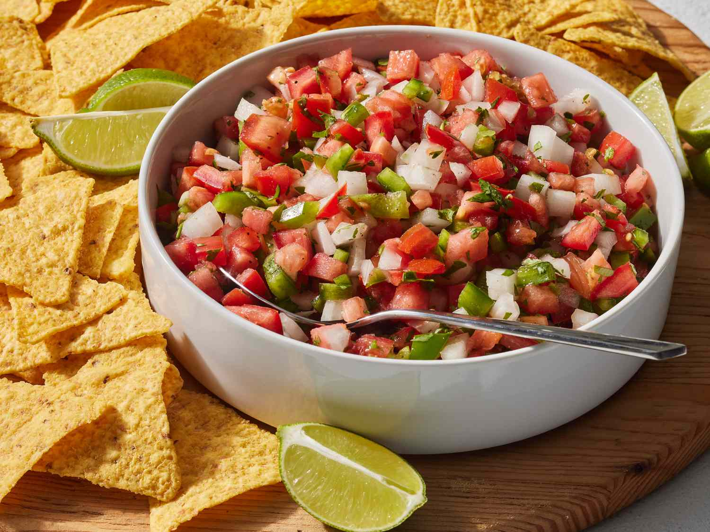

Salsa

This is a delicious recipe for Salsa
These homemade loaded Salsa are piled high with refried beans, salsa, jalapeños, and cheese.
Some delicious sides can include guacamole and cotija cheese.
Ingredients
- beef
- cheese
- beans
- taco shells
Steps
- Set an oven rack about 6 inches from the heat source and preheat the oven's broiler. Line a baking sheet with aluminum foil.
- Gather all ingredients.
- Cook and stir ground beef in a skillet over medium heat until crumbly and no longer pink, 5 to 10 minutes.
- Spread tortilla chips on the prepared baking sheet; top with Cheddar cheese, then dot with refried beans and ground beef mixture.
- Broil in the preheated oven until cheese is melted, 3 to 5 minutes. Top Salsa with olives, salsa, sour cream, green onions, and jalapeño peppers.
Home